Skripsi & Tesis
- Pengerjaan dari nol (BAB 1-5)
- Revisi & formatting sesuai pedoman kampus
- Cek similarity & saran perbaikan
Nugas Kampus siap bantu skripsi, tesis, jurnal ilmiah, presentasi sidang, olah data, sampai pembuatan website dan sistem digital. Cepat, rapi, dan harga bersahabat untuk kantong mahasiswa.
Respon cepat · Konsultasi gratis · Kerjakan sesuai deadline
Pengerjaan sesuai deadline, bahkan untuk kebutuhan mendesak sekalipun.
Hasil kerja terstruktur, sesuai pedoman kampus, dan siap dikumpulkan.
Sudah membantu ratusan mahasiswa dan instansi di seluruh Indonesia.
Ramah di kantong mahasiswa, dengan kualitas yang tetap diutamakan.
Dari tugas akademik sampai kebutuhan digital, semua bisa dibantu dalam satu tempat.
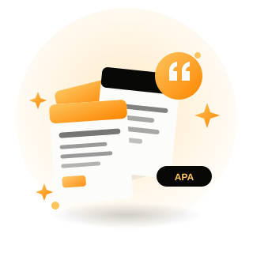
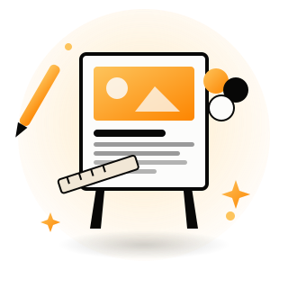
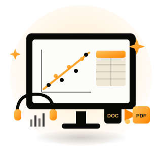
Hubungi CS kami lewat WhatsApp, ceritakan kebutuhan tugasmu.
Diskusi detail, deadline, dan harga sampai deal.
Tugas dikerjakan sesuai kesepakatan dan dikirim tepat waktu.
Bukti nyata dari mahasiswa & instansi yang tugasnya kelar bareng kami.
Keaslian tugasmu kami cek, dan datanya kami olah, memakai tool yang sama seperti yang dipakai kampus dan peneliti. Bukan asal jadi.
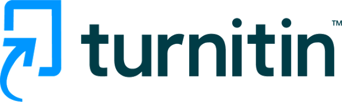
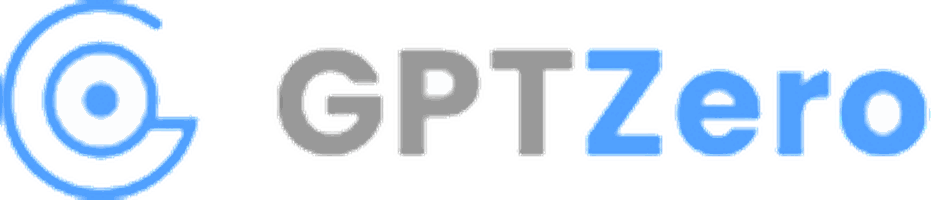
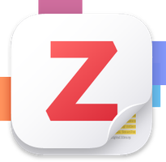
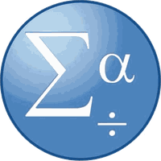
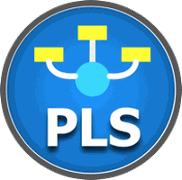
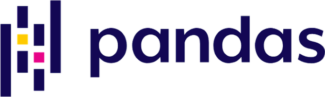
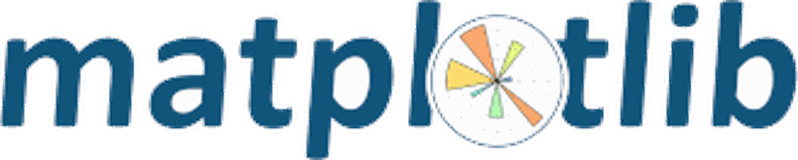
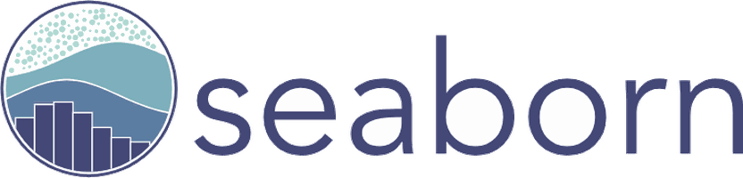
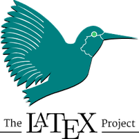
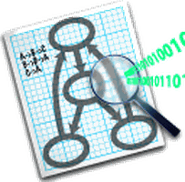
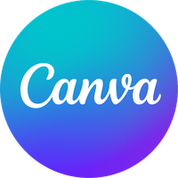
Logo milik masing-masing pemiliknya. Nugas Kampus memakai tool ini sebagai penunjang, bukan afiliasi resmi.
Chat sekarang, konsultasi gratis, dan biarkan Nugas Kampus yang urus sisanya.